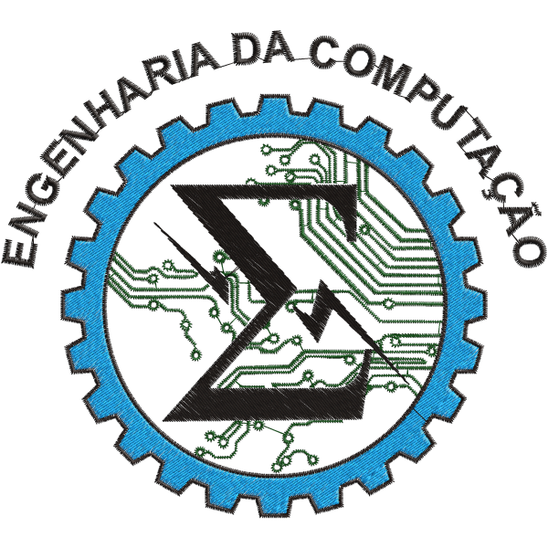

Sobre o curso
A Engenharia da Computação projeta, desenvolve e gerencia sistemas computacionais, incluindo hardware, software, redes e sistemas embarcados. O curso forma profissionais habilitados para criar soluções tecnológicas inovadoras em áreas como comunicações, automação e inteligência artificial, com uma metodologia que abrange tópicos de eletrônica, programação, arquitetura de sistemas, redes e segurança.
Os alunos têm a oportunidade de trabalhar em projetos práticos, participando de pesquisa e desenvolvimento de aplicativos, sistemas embarcados, redes de computadores e sistemas de controle e automação. A formação abre portas para carreiras em empresas de desenvolvimento de software, fabricantes de hardware, empresas de telecomunicações, setores de automação industrial e bancos.
Fonte: Querobolsa. (Abre em nova guia)
Informações Adicionais
-
Informações detalhadas sobre a grade curricular do curso.
- Semestre 1
- Semestre 2
- Semestre 3
- Semestre 4
- Semestre 5
- Semestre 6
- Semestre 7
- Semestre 8
- Semestre 9
- Semestre 10
Disciplinas Carga Horária Algoritmos e Lógica de Programação 80 horas Cálculo I 40 horas Arquitetura e Organização de Computadores 80 horas Geometria Analítica 40 horas Metodologia Científica e Tecnológica 80 horas Teoria da Computação 80 horas Disciplinas Carga Horária Física I 40 horas Cálculo II 40 horas Álgebra Linear 40 horas Sistemas Operacionais 40 horas Estrutura de Dados 80 horas Atividades Curriculares de Extensão – ACEx 80 horas Disciplinas Carga Horária Engenharia de Software 80 horas Pesquisa e Classificação de Dados 80 horas Equações Diferenciais Ordinárias 40 horas Física II 40 horas Matemática Discreta 40 horas Sistemas Digitais 80 horas Atividades Curriculares de Extensão – ACEx 40 horas Disciplinas Carga Horária Redes de Computadores 80 horas Processos Estocásticos 40 horas Funções de Variáveis Complexas 40 horas Fundamentos de Administração para Engenheiros 40 horas Introdução à Ciências do Ambiente 40 horas Introdução à Teoria Eletromagnética 80 horas Atividades Curriculares de Extensão – ACEx 80 horas Disciplinas Carga Horária Interface Homem Máquina 40 horas Linguagem de Programação I 80 horas Projetos de Engenharia I 40 horas Circuitos Elétricos I 80 horas Computação Gráfica e Processamento de Imagens 80 horas Direito e Legislação 40 horas Atividades Curriculares de Extensão – ACEx 40 horas Disciplinas Carga Horária Engenharia Econômica 40 horas Programação Paralela 80 horas Linguagem de Programação II 80 horas Projetos de Engenharia II 40 horas Circuitos Elétricos II 80 horas Microprocessadores e Microcontroladores 40 horas Atividades Curriculares de Extensão – ACEx 40 horas Disciplinas Carga Horária Introdução aos Sistemas de Comunicação 40 horas Programação Orientada à Objetos 80 horas Sociedade e Cultura 40 horas Microeletrônica 80 horas Gestão de Projetos 40 horas Controle e Automação 80 horas Atividades Curriculares de Extensão – ACEx 40 horas Disciplinas Carga Horária Projeto de Pesquisa em Engenharia de Computação 40 horas Projeto de Sistemas Embarcados 80 horas Projeto de Sistemas Distribuídos 80 horas Inteligência Artificial 80 horas Concepção de Circuitos Integrados 40 horas Atividades Curriculares de Extensão – ACEx 80 horas Disciplinas Carga Horária Automação Industrial 40 horas Compiladores 40 horas Modelagem não Relacional (NoSql) 80 horas Trabalho de Conclusão de Curso I 80 horas Estágio Supervisionado I 120 horas Atividades Curriculares de Extensão – ACEx 40 horas Disciplinas Carga Horária Tópicos Avançados em Engenharia de Computação 80 horas Disciplina Optativa 40 horas Gerência e Qualidade de Software 80 horas Trabalho de Conclusão de Curso II 80 horas Estágio Supervisionado II 120 horas